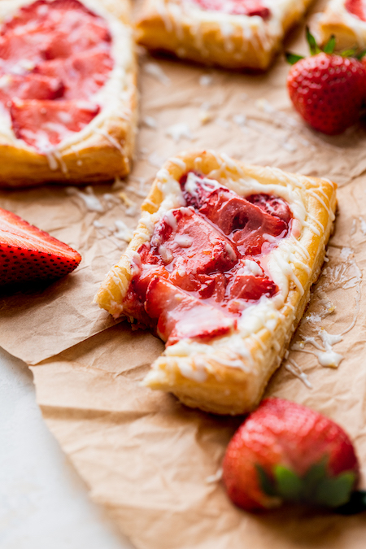

Strawberry Danishes
This recipe is really easy, and tastes AMAZING

Ingredients
Frozen puff pastry- You can go crazy and make your own puff pastry, or you can buy the frozen sheets at your grocery store. They are the perfect size!
Cream cheese- Use full fat cream cheese and not reduced fat.
Fresh strawberries- Use fresh for best taste.
Lemon zest- Use actual lemon zest for the drizzle to get a zesty flavor.
Instructions
First, the pastry needs to sit out for 30 minutes. Otherwise it is too cold to use. If you wait too long, the pastry's butter will melt. Then, roll the pastry out to make sure the seams are blended.
Next, prepare the cream cheese filling. Use a hand mixer to beat the cream cheese on high for 1 minute. Then, add in the sugar and beat again. It needs high speed to beat until smooth. Next, add in the vanilla.
Cut the strawberries. The strawberries should be sliced into thin slices. Then, mix the cornstarch and sugar. This will sweeten and thicken the strawberries.
Next, cut the dough in half and cut each half into thirds. You will end with 6 rectangles of dough. Score a 1/4 inch border around each of the rectangle.
Spread 1 tablespoon of cream cheese onto each rectangle. Spread it around the edges. Top with the strawberries. Lay them across the cream cheese nicely and compact. Then, brush the egg wash over the edges of the pastry.
Bake for 20 minutes.
Home Page